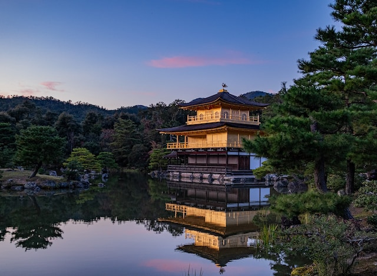

Japan’s busy capital
Tokyo, Japan’s busy capital, mixes the ultramodern and the traditional, from neon-lit skyscrapers to historic temples. The opulent Meiji Shinto Shrine is known for its towering gate and surrounding woods.

City on the island of Honshu
Kyoto, once the capital of Japan, is a city on the island of Honshu. It's famous for its numerous classical Buddhist temples, as well as gardens, imperial palaces, Shinto shrines and traditional wooden houses.
Japan’s busy capital
Tokyo, Japan’s busy capital, mixes the ultramodern and the traditional, from neon-lit skyscrapers to historic temples. The opulent Meiji Shinto Shrine is known for its towering gate and surrounding woods.